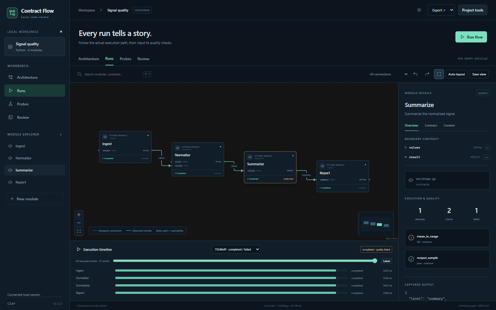

Architecture
Explicit bindings and versioned interfaces, with reviewed changes and independent layout.
Read the semantic model →Define Python modules, contracts and public composite ports. Review implementation and architecture proposals. Inspect actual run paths, quality failures and versioned evidence on one local canvas.

Explicit bindings and versioned interfaces, with reviewed changes and independent layout.
Read the semantic model →Assertions and bounded capture observe values; separate controls block, pause or resume execution.
Inspect boundary evidence →Python packages include Studio. The examples need no API key, Node runtime or cloud account.
Command reference →python -m pip install . cdaf demo --target cdaf-demo --serve